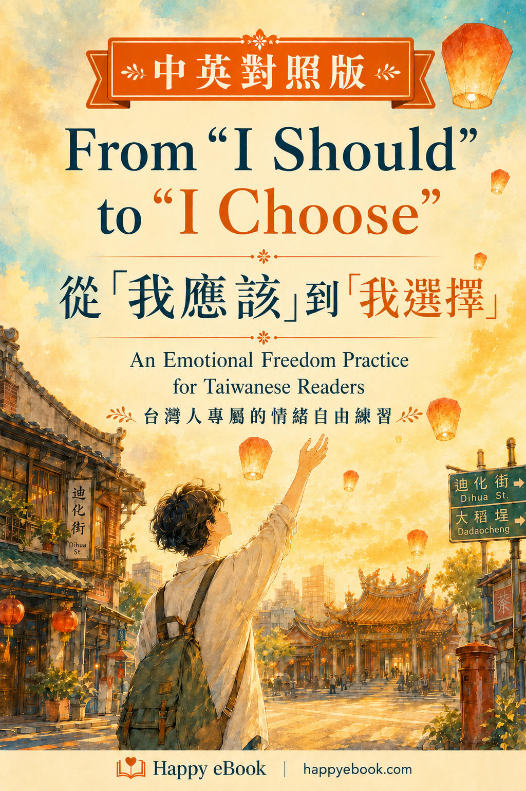

電子書
從「我應該」到「我選擇」/ From "I Should" to "I Choose"
台灣人專屬的情緒自由練習 — A Taiwanese Guide to Emotional Freedom

從「我應該」到「我選擇」/ From "I Should" to "I Choose"
台灣人專屬的情緒自由練習 — A Taiwanese Guide to Emotional Freedom
從台灣人的家庭、職場與社群生活出發，練習把無法控制的事交還給別人，把選擇權帶回自己。中英對照編排，附具體對話腳本與 30 天練習。
作品介紹；目前未提供購買或試閱入口